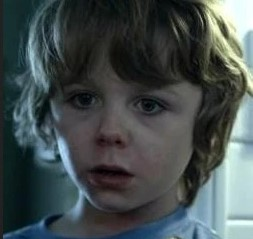
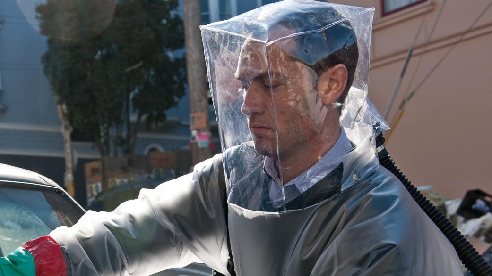
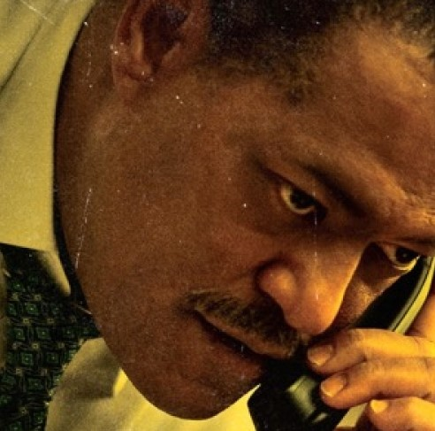

"Contagion brings to light the dangers that have manifested upon millions in the past couple of years and masterfully blends this battle of knowledge with a pandemic-themed thriller."
The 2011 film Contagion follows the events of the MEV-1, a deadly virus that kills in days. It delves into the layered struggles of the world, both at the government and individual level. Directed by Steven S. (Soderbergh, not Spielberg), the film tracks the spread of the virus, from patient zero in Hong Kong to the gradual breakdown of society as trust issues emerge.
The characters in this movie come in a wide range, from dead to still alive. Some of the more lovable cast include the immune Mitch Emhoff, his deceased stepson, Clark, and Dr. Mears, who succumbed to the virus, fighting it on the frontlines. The rest of the characters are either morally debatable, such as Dr. Cheever, the head of the movement against the virus caught up in a controversy, or flat-out despicable, such as CDC hater number 1, Alan, a journalist trying to uncover the “truth.”
 RIP Clark. Not a single theory of knowledge in between those eyes.Besides the virus, one of the struggles raised in this film is the debate on the control of knowledge: Is everyone entitled to the truth? Does everyone have the right to know, or should the bigger picture be prioritized?
Throughout the film, there is the conflict of who has what information, such as whether an area is about to be evacuated or when the vaccine comes out. There are two sides to this: one where information can be withheld for the public benefit and the other where all information should become public.
For those who have seen the Earth from space, and for the hundreds and perhaps thousands more who will, the experience most certainly changes your perspective. The things that we share in our world are far more valuable than those which divide us.
Do the right to knowledge differ between people?
Knowledge of a pathogen would undeniably increase your chances of survival compared to if you didn’t know about it. But does that really result in the best outcome?
On one side, there is the argument that not everyone should have the same intel and that withholding information from the top brass is actually good for the collective. By placing trust in authority to handle the situation, The side was taken by the likes of the officials or the CDC workers, who try to keep information within their own circles.
On the other hand, there is the notion that everyone should know everything and that there should be equal access to knowledge. This is propagated by none other than Alan, the fearmonger-er. This tenacious journalist goes to great lengths to uncover the CDC's sickest secrets.
 Alan Krumwiede. The only part of this man that backs down is his hairline.How does trust play into this?
Looking at the situation practically, it makes a lot of sense to trust the authorities with all the knowledge. The goal of withholding information was to avoid social breakdown. By placing trust in authority to handle the situation, there would be controlled levels of panic, if any. There were multiple instances where information coming out at the wrong time led to additional unrest. There is a scene where people are queueing for Forsythia, a drug that allegedly cures MEV-1, but the pharmacy announced that they were only allowed to give out 50 doses to a line of at least 51 people if not more. This results in a crowd rush in the pharmacy and many other locations.
Yet, as the film progresses, the trust in the CDC's authority slowly regresses. The population, displeased with the CDC’s response, started to commit civil unrest. This is further exacerbated by news of Dr. Cheever giving his family an early warning to evacuate Chicago before everyone else. A big chunk of this news is spread by Alan, who broadcasts this information to millions of viewers. In addition, Alan reveals that he has been cured of MEV-1 by taking Forsythia, which the CDC has been intentionally downplaying its effectiveness for their own profit.
 Dr. Cheever. This guy plays favoritesIn an ironic turn of events, Alan gets arrested and is revealed to have fearmongered for his own gain, as he was the one selling Forsythia. Though the trust of the population shifted from the allegedly “corrupt” CDC to the free-thinking Alan, this trust was misplaced. Ultimately, director Steven warns about the dangers of misinformation. Especially in dark situations, human nature inclines people to trust only themselves and do their own thing. In the case of Contagion, this was manifested with all the rioting and looting.
Final Thoughts
 The cure to tough stains. And depression. Possibly even Covid.
The cure to tough stains. And depression. Possibly even Covid.
At the end of the day, it is a film depicting everyone pushing for thier own personal benefit amidst a crisis. Except the step-son. He died early. He had little ambition to push for.